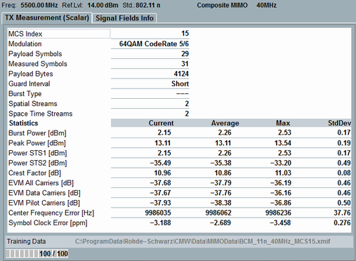

View TX Measurement (Scalar) for CMIMO (802.11n, ac)
The view contains a table of statistical results.

Composite MIMO scalar results
The table provides the following results in the upper part:
- "MCS Index": modulation and coding scheme index, determining, for example the modulation type, coding rate and number of spatial streams. For overview tables, see IEEE 802.11-2012, section 20.6.
- "Modulation": see "Physical Layer"
- "Payload Symbols": number of OFDM symbols in the payload of the measured burst
- "Measured Symbols": number of measured OFDM symbols (only R&S CMW100/CMW with MUA)
- "Payload Bytes": number of bytes in the payload of the measured burst (only R&S CMW100/CMW with MUA)
- "Guard Interval": see "Physical Layer"
- "Burst Type": see "Physical Layer"
- "Spatial Streams", "Space Time Streams": number of spatial streams NSS and space-time streams NSTS (only R&S CMW100/CMW with MUA)
- "Spatial Streams", "Space Time Streams": Number of spatial streams NSS and space-time streams NSTS, see also "MIMO Signals"
In the lower part, the table provides results with statistical evaluation:
- "Burst Power", "Peak Power": RMS and peak power of the measured burst
- "Power STS1" to "Power STS4": RMS power for the individual space-time streams
- EVM: Error vector magnitude of the composite signal. Ideal signals are calculated per space-time stream and combined to a sum signal. The error vector is determined by comparison of the ideal sum signal with the received sum signal.
EVM values can always be determined for pilot subcarriers. If the signal contains more than one spatial stream (MCS index > 7), the EVM for the data carriers cannot be determined unless training data are used for the measurement. Without training data, the EVM values for "All Carriers" and "Data Carriers" are not available. See "Composite MIMO Measurements". - Center frequency error
- "Training Data": see "Training Data"
For query of the results via remote control, see:
For additional information, refer to "Common View Elements".